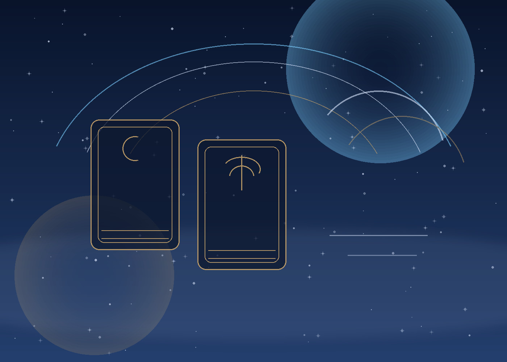

Relationship Guide
Tarot for no contact and whether you should reach out

Tarot for no contact situations is rarely only about whether someone misses you. These questions are usually about whether you should reach out, whether waiting still makes sense, and whether contact would create clarity or more confusion.
What tarot for no contact can help you see
Tarot can help clarify whether the connection still has emotional movement, whether silence is protective or avoidant, and whether the user is reading real signal or only longing.
What no contact readings should avoid
They should avoid turning uncertainty into fantasy. A useful reading should help the user regulate emotion, notice pattern, and choose a healthier next step.
Better questions for no contact
Better questions include: What is the real energy behind this silence? What should I understand before I act? Would reaching out now support clarity or prolong confusion?
When timing systems help
If the situation has become a repeating emotional cycle, Bazi or astrology timing layers can add more context than a simple emotional reading alone.